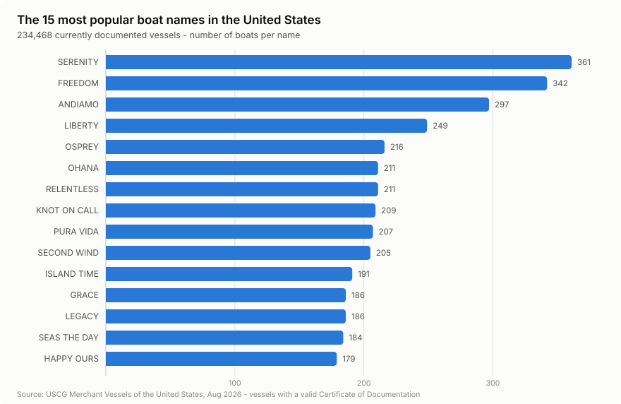
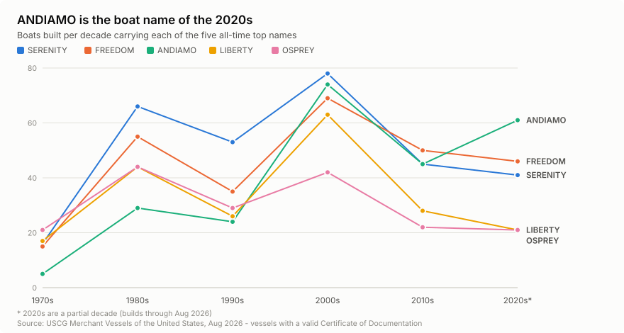
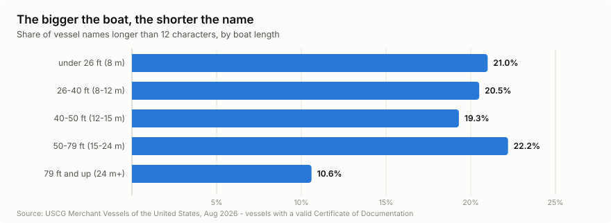

Every boat name in America
395,728 US Coast Guard-documented vessels, cleaned into one analysis-ready CSV. Free to use — the source is US federal government data in the public domain.
SERENITY is America's most popular boat name
361 currently documented vessels carry it, ahead of FREEDOM (342) and ANDIAMO (297).

ANDIAMO is the boat name of the 2020s
Among boats built since 2020, ANDIAMO (61) has overtaken the classics — and pun names are taking over: KNOT ON CALL, LIQUID ASSET, WHY KNOT and KNOT WORKING all sit in the 2020s top ten.

The bigger the boat, the shorter the name
Vessels of 79 ft and up average 8.8 characters, and only 10.6% of their names run longer than 12 characters — against roughly 20% everywhere else.

Explore it
Columns
| Column | Description |
|---|---|
| vessel_name | uppercased, whitespace-normalised |
| official_number | USCG official number |
| length_ft | registered length in feet |
| build_year | year of completion |
| hailing_port, hailing_port_state | the port shown on the stern |
| service | e.g. Recreational, Commercial Fishing Vessel |
| recreational | 1 if the Recreation endorsement or service applies |
| hull_material | e.g. FRP (Fiberglass), Steel, Wood, Aluminum |
| cod_status | Certificate of Documentation status |
Source: US Coast Guard, Merchant Vessels of the United States, release of August 2026 (data as of 2026-08-05), retrieved 2026-08-31. Rankings count the 234,468 vessels with a valid Certificate of Documentation. Owner and personal information is not included. Documentation is required for commercial vessels of 5+ net tons and optional for recreational boats of that size, so small state-registered boats are not covered. Please cite as: M.Square Marine, boat-names-dataset (2026), based on US Coast Guard data.